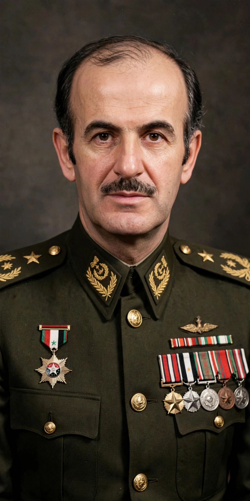

From Wikipedia, the free encyclopedia
| Hafez al-Assad | |
|---|---|
 Assad in the 1970s | |
| Born | 6 October 1930 Qardaha, Alawite State, French Syria |
| Died | 10 June 2000 (aged 69) Damascus, Syria |
| Office | President of Syria (1971–2000) |
| Party | Arab Socialist Ba'ath Party |
| Spouse | Anisa Makhlouf |
| Children | Bushra, Bassel, Bashar, Maher, Majd |
Hafez al-Assad (6 October 1930 – 10 June 2000) was a Syrian statesman and military officer who served as President of Syria from 1971 until his death in 2000. A leading figure of the Ba'ath Party, he seized power in the bloodless "Corrective Movement" of November 1970 and ruled Syria for three decades, building a highly centralised authoritarian state dominated by the presidency, the armed forces and the security services.
Assad was born in Qardaha, a village in the Alawite heartland of northwestern Syria, into a family of the Kalbiyya tribe. He joined the Ba'ath Party as a schoolboy and entered the military academy at Homs, graduating as an air force pilot in 1955. Posted to Egypt during the period of the United Arab Republic (1958–1961), he fell out with the leadership after Syria's secession and was cashiered, but returned to prominence after the Ba'athist coup of 8 March 1963. He became commander of the air force in 1964 and Minister of Defence in 1966.
After the disastrous defeat in the Six-Day War of 1967, rivalry deepened between Assad and the party's civilian strongman Salah Jadid. In October–November 1970 Assad moved against Jadid's faction; Jadid was arrested and Assad became the effective ruler of Syria. He was confirmed as president by referendum in March 1971.
Assad pursued a policy he called the "Corrective Movement", moderating the radical socialism of the 1960s, courting the urban Sunni merchant class and building a broad presidential system. In October 1973 Syria joined Egypt in the Yom Kippur War against Israel; although Israel recovered the Golan Heights gains, the war restored Assad's standing in the Arab world. Syria intervened in the Lebanese Civil War from 1976 and remained the dominant power in Lebanon for decades.
Domestically, opposition was suppressed ruthlessly. When the Muslim Brotherhood mounted an armed insurgency, government forces crushed it in the 1982 Hama massacre, in which thousands were killed. Assad positioned Syria as a leader of the "rejectionist" camp against Israel, allied with Iran after 1979 and with the Soviet Union during the Cold War, yet joined the US-led coalition against Iraq in the 1991 Gulf War.
Assad died of a heart attack on 10 June 2000 while on the telephone with Lebanese prime minister Salim al-Hoss. His elder son Bassel, long groomed as heir, had died in a car crash in 1994, so power passed to his second son, Bashar al-Assad, whose succession was ratified by referendum the following month.
Supporters credit Assad with stability, state-building and an assertive regional role; critics describe a personality cult, systematic repression and the entrenchment of sectarian and family networks, including the prominence of his brother Rifaat and the Makhlouf family, that shaped Syria long after his death.